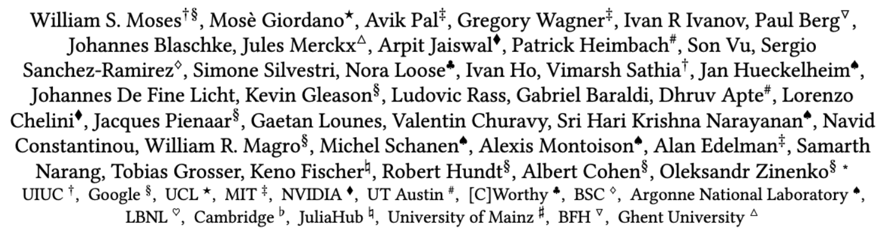
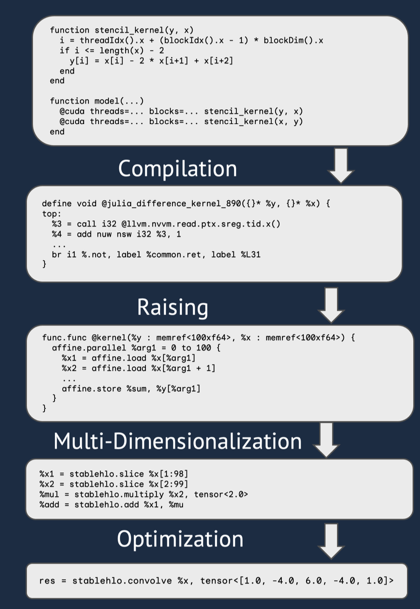
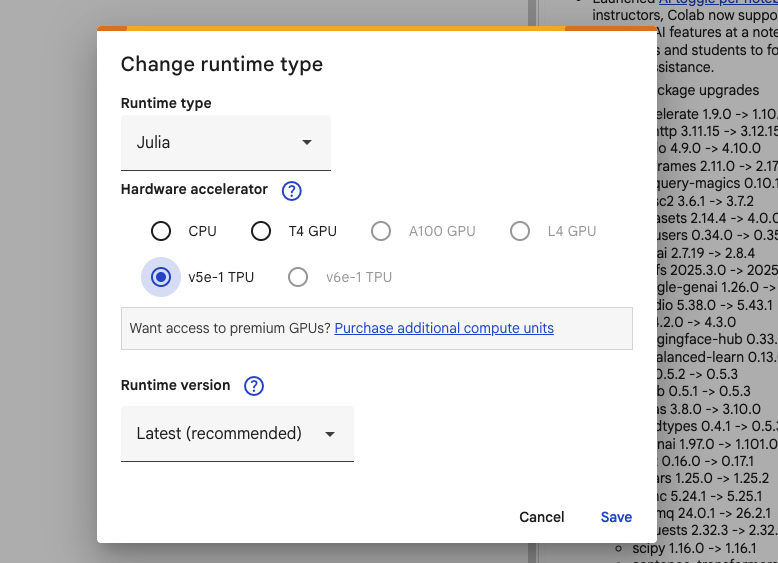
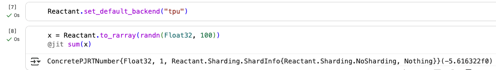

Optimize Julia Functions With MLIR and XLA for High-Performance Execution on CPU, GPU, TPU and more.

function f(x::Symmetric)
return x * x + transpose(x * x)
end
function f(x::Symmetric)
return 2 * x * x
end
function f(x::Symmetric)
out = similar(x)
mul!(out, x, x, 2, 0)
end
julia> @code_typed f(x)
CodeInfo(
1 ─ %1 = invoke Main.:*(x::Symmetric{Float32, Matrix{Float32}}, x::Symmetric{Float32, Matrix{Float32}})::Matrix{Float32}
│ %2 = invoke Main.:*(x::Symmetric{Float32, Matrix{Float32}}, x::Symmetric{Float32, Matrix{Float32}})::Matrix{Float32}
│ %3 = %new(Transpose{Float32, Matrix{Float32}}, %2)::Transpose{Float32, Matrix{Float32}}
│ %4 = invoke Main.:+(%1::Matrix{Float32}, %3::Transpose{Float32, Matrix{Float32}})::Matrix{Float32}
└── return %4
julia> @code_typed x * x
CodeInfo(
1 ── %1 = Base.getfield(B, :data)::Matrix{Float32}
│ %2 = Base.getfield(%1, :size)::Tuple{Int64, Int64}
│ %3 = Base.getfield(%2, 1, false)::Int64
│ %4 = Base.getfield(%1, :size)::Tuple{Int64, Int64}
│ %5 = Base.getfield(%4, 2, false)::Int64
│ %6 = (Core.Intrinsics.checked_smul_int)(%3, %5)::Tuple{Int64, Bool}
│ %7 = Core.getfield(%6, 1)::Int64
│ %8 = Core.getfield(%6, 2)::Bool
│ %9 = (Core.Intrinsics.ule_int)(Core.typemax_Int, %3)::Bool
│ %10 = (Core.Intrinsics.or_int)(%8, %9)::Bool
│ %11 = (Core.Intrinsics.ule_int)(Core.typemax_Int, %5)::Bool
│ %12 = (Core.Intrinsics.or_int)(%10, %11)::Bool
└─── goto #3 if not %12
2 ── %14 = invoke Core.ArgumentError("invalid Array dimensions"::String)::ArgumentError
│ Core.throw(%14)::Union{}
└─── unreachable
3 ── goto #4
4 ── %18 = (%7 === 0)::Bool
└─── goto #6 if not %18
5 ── %20 = Core.getproperty(Memory{Float32}, :instance)::Memory{Float32}
└─── goto #7
6 ── %22 = $(Expr(:foreigncall, :(:jl_alloc_genericmemory), Ref{Memory{Float32}}, svec(Any,
Int64), 0, :(:ccall), Memory{Float32}, :(%7), :(%7)))::Memory{Float32}
└─── goto #7
7 ┄─ %24 = φ (#5 => %20, #6 => %22)::Memory{Float32}
│ %25 = Core.memoryrefnew(%24)::MemoryRef{Float32}
└─── goto #8
8 ── %27 = Core.tuple(%3, %5)::Tuple{Int64, Int64}
│ %28 = %new(Matrix{Float32}, %25, %27)::Matrix{Float32}
└─── goto #9
9 ── goto #10
10 ─ %31 = Base.getfield(B, :data)::Matrix{Float32}
│ %32 = Base.getfield(%31, :size)::Tuple{Int64, Int64}
│ %33 = Core.getfield(%32, 1)::Int64
│ %34 = Core.getfield(%32, 2)::Int64
│ %35 = Base.mul_int(%33, %34)::Int64
│ %36 = (%35 === 0)::Bool
└─── goto #12 if not %36
11 ─ goto #26
12 ─ %39 = Base.getfield(%28, :ref)::MemoryRef{Float32}
│ %40 = Base.getfield(%39, :mem)::Memory{Float32}
│ %41 = Base.getfield(%40, :length)::Int64
│ %42 = (%41 === 0)::Bool
│ %43 = Base.not_int(%42)::Bool
└─── goto #21 if not %43
13 ─ %45 = Base.getfield(B, :data)::Matrix{Float32}
│ %46 = Base.getfield(%45, :size)::Tuple{Int64, Int64}
│ %47 = Core.getfield(%46, 1)::Int64
│ %48 = Core.getfield(%46, 2)::Int64
│ %49 = Base.mul_int(%47, %48)::Int64
│ %50 = (%49 === 0)::Bool
│ %51 = Base.not_int(%50)::Bool
└─── goto #20 if not %51
14 ─ %53 = Base.getfield(%28, :ref)::MemoryRef{Float32}
│ %54 = Base.getfield(%53, :mem)::Memory{Float32}
│ %55 = $(Expr(:foreigncall, :(:jl_genericmemory_owner), Any, svec(Any), 0, :(:ccall), :(
%54)))::Any
│ %56 = (%55 isa Memory{Float32})::Bool
└─── goto #16 if not %56
15 ─ %58 = π (%55, Memory{Float32})
└─── goto #17
16 ─ nothing::Nothing
17 ┄ %61 = φ (#15 => %58, #16 => %54)::Memory{Float32}
│ %62 = Base.getfield(%61, :ptr)::Ptr{Nothing}
│ %63 = Base.bitcast(Ptr{Float32}, %62)::Ptr{Float32}
│ %64 = Core.bitcast(Core.UInt, %63)::UInt64
└─── goto #18
18 ─ goto #19
19 ─ %67 = $(Expr(:foreigncall, :(:jl_object_id), UInt64, svec(Any), 0, :(:ccall), Core.Argu
ment(3)))::UInt64
│ %68 = (%64 === %67)::Bool
│ %69 = Base.not_int(%68)::Bool
│ %70 = Base.not_int(%69)::Bool
└─── goto #22
20 ─ goto #22
21 ─ goto #22
22 ┄ %74 = φ (#19 => %70, #20 => false, #21 => false)::Bool
└─── goto #24 if not %74
23 ─ %76 = invoke Base.unaliascopy(B::Symmetric{Float32, Matrix{Float32}})::Symmetric{Float3
2, Matrix{Float32}}
└─── goto #25
24 ─ goto #25
25 ┄ %79 = φ (#23 => %76, #24 => B)::Symmetric{Float32, Matrix{Float32}}
│ %80 = invoke Base.copyto_unaliased!($(QuoteNode(IndexLinear()))::IndexLinear, %28::Matr
ix{Float32}, $(QuoteNode(IndexCartesian()))::IndexCartesian, %79::Symmetric{Float32, Matrix{F
loat32}})::Matrix{Float32}
└─── goto #26
26 ┄ %82 = φ (#11 => %28, #25 => %80)::Matrix{Float32}
│ %83 = Base.getfield(A, :data)::Matrix{Float32}
│ %84 = Base.getfield(%83, :size)::Tuple{Int64, Int64}
│ %85 = $(Expr(:boundscheck, true))::Bool
│ %86 = Base.getfield(%84, 1, %85)::Int64
│ %87 = Base.getfield(%82, :size)::Tuple{Int64, Int64}
│ %88 = Base.getfield(%87, 2, false)::Int64
│ %89 = (Core.Intrinsics.checked_smul_int)(%86, %88)::Tuple{Int64, Bool}
│ %90 = Core.getfield(%89, 1)::Int64
│ %91 = Core.getfield(%89, 2)::Bool
│ %92 = (Core.Intrinsics.ule_int)(Core.typemax_Int, %86)::Bool
│ %93 = (Core.Intrinsics.or_int)(%91, %92)::Bool
│ %94 = (Core.Intrinsics.ule_int)(Core.typemax_Int, %88)::Bool
│ %95 = (Core.Intrinsics.or_int)(%93, %94)::Bool
└─── goto #28 if not %95
27 ─ %97 = invoke Core.ArgumentError("invalid Array dimensions"::String)::ArgumentError
│ Core.throw(%97)::Union{}
└─── unreachable
28 ─ goto #29
29 ─ %101 = (%90 === 0)::Bool
└─── goto #31 if not %101
30 ─ %103 = Core.getproperty(Memory{Float32}, :instance)::Memory{Float32}
└─── goto #32
31 ─ %105 = $(Expr(:foreigncall, :(:jl_alloc_genericmemory), Ref{Memory{Float32}}, svec(Any,
Int64), 0, :(:ccall), Memory{Float32}, :(%90), :(%90)))::Memory{Float32}
└─── goto #32
32 ┄ %107 = φ (#30 => %103, #31 => %105)::Memory{Float32}
│ %108 = Core.memoryrefnew(%107)::MemoryRef{Float32}
└─── goto #33
33 ─ %110 = Core.tuple(%86, %88)::Tuple{Int64, Int64}
│ %111 = %new(Matrix{Float32}, %108, %110)::Matrix{Float32}
└─── goto #34
34 ─ goto #35
35 ─ goto #36
36 ─ goto #37
37 ─ %116 = Base.getfield(A, :uplo)::Char
│ %117 = Base.bitcast(Base.UInt32, %116)::UInt32
│ %118 = Base.bitcast(Base.UInt32, 'U')::UInt32
│ %119 = (%117 === %118)::Bool
│ %120 = Base.getfield(A, :data)::Matrix{Float32}
└─── goto #39 if not %119
38 ─ goto #40
39 ─ goto #40
40 ┄ %124 = φ (#38 => 'S', #39 => 's')::Char
│ %125 = Base.bitcast(Base.UInt32, %124)::UInt32
│ %126 = Base.bitcast(Base.UInt32, 'S')::UInt32
│ %127 = (%125 === %126)::Bool
└─── goto #41
41 ─ goto #43 if not %127
42 ─ goto #44
43 ─ nothing::Nothing
44 ┄ %132 = φ (#42 => 'U', #43 => 'L')::Char
│ %133 = invoke LinearAlgebra.BLAS.symm!('L'::Char, %132::Char, 1.0f0::Float32, %120::Matr
ix{Float32}, %82::Matrix{Float32}, 0.0f0::Float32, %111::Matrix{Float32})::Matrix{Float32}
└─── goto #45
45 ─ goto #46
46 ─ goto #47
47 ─ goto #48
48 ─ goto #49
49 ─ return %133
) => Matrix{Float32}
julia> using Reactant
julia> x_reactant = Reactant.to_rarray(x);
julia> @code_hlo f(x_reactant)
func.func @main(
%arg0: tensor<10x10xf32>
) -> tensor<10x10xf32> {
%c = stablehlo.constant dense<[...]> : tensor<10x10xi1>
%cst = stablehlo.constant dense<0.000000e+00> : tensor<10x10xf32>
%c_0 = stablehlo.constant dense<[...]> : tensor<10x10xi1>
%0 = stablehlo.transpose %arg0, dims = [1, 0] : (tensor<10x10xf32>) -> tensor<10x10xf32>
%1 = stablehlo.select %c_0, %0, %cst : tensor<10x10xi1>, tensor<10x10xf32>
%2 = stablehlo.select %c, %arg0, %cst : tensor<10x10xi1>, tensor<10x10xf32>
%3 = stablehlo.add %2, %1 : tensor<10x10xf32>
%4 = stablehlo.dot_general %3, %3, contracting_dims = [1] x [0], precision = [DEFAULT, DEFAULT] : (tensor<10x10xf32>, tensor<10x10xf32>) -> tensor<10x10xf32>
%5 = stablehlo.transpose %4, dims = [1, 0] : (tensor<10x10xf32>) -> tensor<10x10xf32>
%6 = stablehlo.add %5, %4 : tensor<10x10xf32>
return %6 : tensor<10x10xf32>
}
using Reactant, CUDA
function square_kernel!(x, y)
i = threadIdx().x
x[i] *= y[i]
return nothing
end
function square!(x, y)
@cuda blocks = 1 threads = length(x) square_kernel!(x, y)
return nothing
end
Reactant.set_default_backend("cpu")
oA = collect(1:1:64)
A = Reactant.to_rarray(oA)
B = Reactant.to_rarray(100 .* oA)
@jit square!(A, B)
Reactant.set_default_backend("tpu")
oA = collect(1:1:64)
A = Reactant.to_rarray(oA)
B = Reactant.to_rarray(100 .* oA)
@jit raise=true square!(A, B)

square(x) = x .^ 2
# Create input data
x = Reactant.to_rarray(Float32[3.0, 4.0, 5.0])
function sq_fwd(x)
x̄ = fill!(similar(x), true)
return Enzyme.autodiff(Forward, square,
Duplicated(x, x̄))[1]
end
result = @jit sq_fwd(x)


github.com/EnzymeAD/Reactant.jl